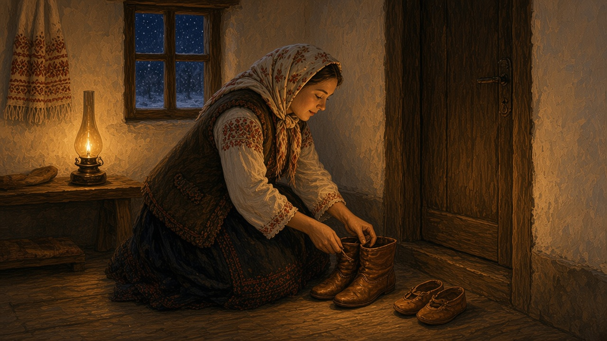
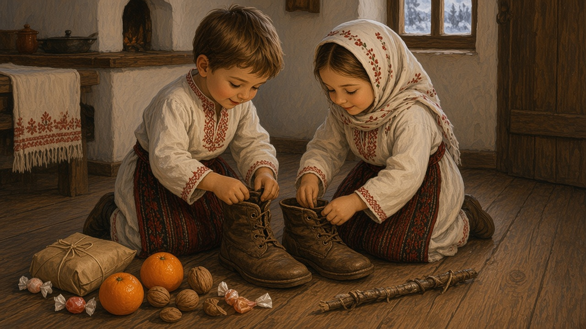

Moș Nicolae
The night of 5 into 6 December. Cleaned boots by the door, and in the morning oranges, walnuts, sweets — and sometimes a little switch.

The evening
The evening people mean is the fifth of December. The morning is the feast, Sfântul Nicolae. Before bed, children clean their boots and set them where they will be found: by the door, or under the window. Cizme are the tall boots. Ghete are the shoes that stop at the ankle. Either pair will do. They are polished, and they are empty. A village still uses the door that faces the yard. A town flat uses the hallway. This page does not pick a room. It names the evening, and the pair left out before anyone sleeps.
The feast sits inside the Christmas fast. Postul Crăciunului has usually already started in the middle of November; the year keeps that shape. The date most parishes print is the sixth. How the church counts a fixed feast sits on Orthodoxy. A few nights earlier the same wood had garlic, on Noaptea Sfântului Andrei. The first of the month had already put a flag on the gate — that morning is 1 Decembrie. This evening is quieter. Nobody rubs the door. Somebody shines a boot.
What the morning finds
On the morning of the sixth the boots are no longer empty. Oranges. Walnuts. Sweets. A small gift, if the house has one — chocolate, a toy, something that fits in a shoe. People say Moș Nicolae came in the night. Moș is an old man, the grandfather in the story. Nicolae is the saint’s name. Christmas has its own old man, Moș Crăciun, and he comes later, with the carols. The church day is Sfântul Nicolae, bishop of Myra. The short note, and an older icon, sit on Orthodoxy. The boots are what the kitchen actually talks about.
Houses do not fill the shoe the same way. One sat still puts in walnuts from the autumn sack. A block of flats buys the orange and the chocolate at the shop. This page will not turn that into a list you must match. The point that travels is the morning look: a child turns a boot over, and something is in it. The room those boots were cleaned in is an ordinary part of the house. Where a hallway still does it, the work is a cloth and a pair of shoes.
The little switch
Nuieluță. A small switch — a thin rod, often a few twigs bound together — left for a child who misbehaved. In a lot of houses it sits in the boot along with the sweets. The orange is still there. The switch is the warning. People say it is for the child who was not good, and then they still give the gift. How stern a family is about it changes from one kitchen to the next. This page does not write a rule for parents. It names the thing children still know how to look for: the stick, thin, next to the walnut.
Some years the switch is only a twig, and the sweets were never in doubt. Some years a child who misbehaved finds the rod and little else. Houses do not all do it the same way. This page will not pick one. The word is the part that lasted.

Before Crăciun
Moș Nicolae opens the winter feast season. Crăciun is still ahead. Carolers come later, to the same door — that knock is on colinde. Between the two the house is in the fast, and the yard is getting colder. That cold, the woodpile, and Ignat if the household still keeps a pig, are on winter. This night is the first one children count. The sheet on the wall already has the name. The question is whether this hallway still has a pair of boots in the morning.
The saint on that sheet is also somebody’s day. Onomastică — the name day, the feast of the saint you were named for. A Nicolae keeps it, and so does a Nicoleta. People say La mulți ani, the same wish as for a birthday. The wider habit sits on the year. You do not need every saint memorized. You need the habit of knowing whose boots were by the door, and whose name the table is for.